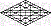

In the Beginning . . .
"In the beginning, God."
|
Our understandings of the emblems that comprise the Lively Oracles of Torah are based on the Oral Tradition so cherished by generations of the People of the Book. The traditional definitions of scripture's words are not in dispute here. Biblical etymology has been consistent for millennia, an unparalleled tribute to the keepers of the Jewish faith. |
The Rabbinical teaching is that scripture has four levels of interpretation. Each level is a doorway of thought, and the highest level knows no bounds; for it is written, "Search the scriptures; for in them you think you have eternal life, and these are they that testify of me." The souls who walk through that door turn the world upside down: |

|
At the first instant, the Eternal One
conceived of an interplay between principles and concepts and
the ambient, transformational context into which his
Variables of the vision were, as yet, without form or substance; for the parameters of finity had yet to be designated. And the Breath of Elohim whispered concerning the potentials of these thoughts, with their implications, filling the void with the signature of its Presence. |
And the first explicit
Word of the Life Breath—its first
expression of itself—was, "Let the vision I hold in my
thoughts be
projected
within finity;” and the vision was projected. And Elohim saw
that the projection of his vision, in its Wisdom, was good. And the bright clarity of the vision, he called Day, the primary manifestation that would provide nourishment for the spiritual minds mankind would develop in its wanderings within the wilderness of Earth. And that chaotic skirt of darkness yet clinging to his vision, he called Night; for he saw in its dynamics a taskmaster that would school even the least of men, so that all mankind would, one day, share his vision. And his understanding of the power to leverage the processes of formation, that they would build congruence with the vision, was day one. |
 thought could be introduced.
thought could be introduced. |
site |
Back | The Emblems of Mt. Sinai | Next | bookmenu |